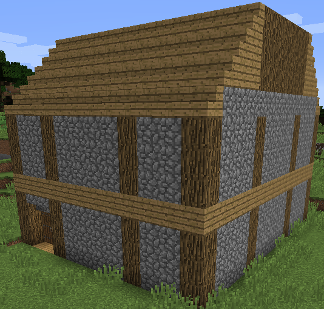
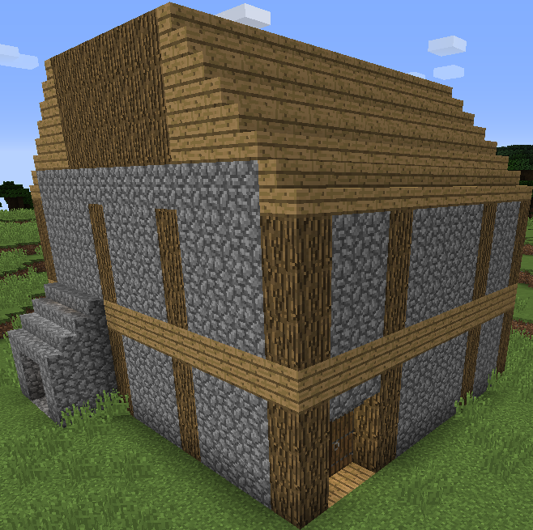

Всем привет!
Я хочу познакомить вас с игрой "Minecraft".
- это 3D-«песочница», разработанная компанией Mojang Studios,
где игрок взаимодействует с игровым миром через размещение
и разрушение различных блоков в трёх разных измерениях.
Разнообразный игровой процесс позволяет игрокам
самим выбирать пути прохождения игры,
открывая бесчисленные возможности.
Minecraft имеет четыре поддерживаемых издания:
 
Игра Minecraft развивает пространственное воображение, алгоритмику,
учит написанию программного кода.
(Смотрите ссылку Minecraft Education)